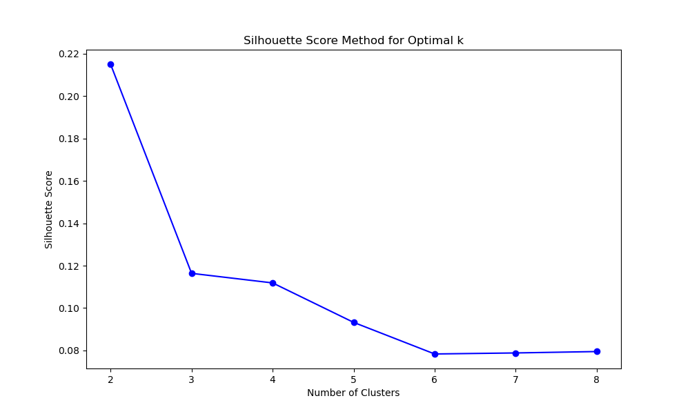
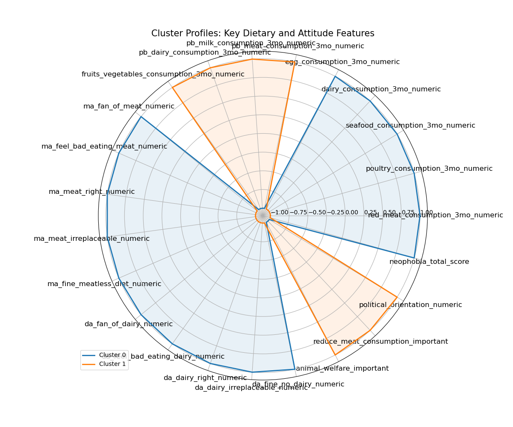

The DATA: This is the data for the Bryant Research 2024 summer survey. A representative survey of the UK population on topics relating to meat consumption, how they view animals and animal products, and alternative proteins.
The SOURCE: Bryant Research Survey
An overview of the clustering results and insights.
This report presents the results of clustering analysis performed on food consumption patterns, attitudes towards meat/dairy, and dietary preferences. The aim is to identify patterns and group similar data points for further analysis.
The clustering method used was K-Means, along with silhouette scores to evaluate the cluster quality.
Silhouette scores show that the optimal number of clusters is 2.
Upon analysis,these two clusters divided the Meat Eaters from the Meat-Reducers
. This radar chart shows that the groups are very separable, meaning that there's little overlap on the variables of interest. Cluster profiles were created by looking at the mean values of each of the features, and are available in the full report. Demographic information was also considered, and it was found that the two groups have slightly different average demographics:
The clustering analysis successfully identified distinct groups within the dataset. The demographic differences between the data sets can help us understand how to influence attitudes around plant-based diets in the UK going forward.